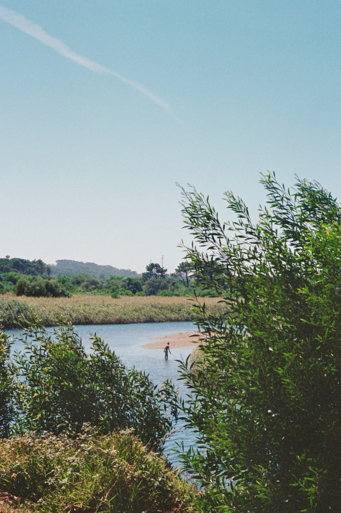

When Narcissus died the pool of his pleasure changed from a cup of sweet waters into a cup of salt tears,
``Who should know that better than you?' answered the Oreads. `Us did he ever pass by, but you he sought for, and would lie on your banks and look down at you, and in the mirror of your waters he would mirror his own beauty.'
Story